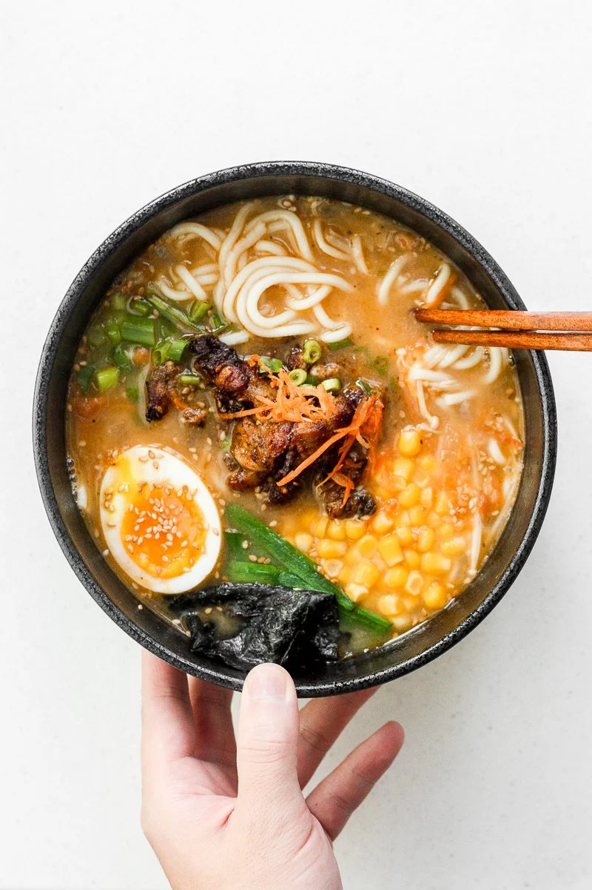

Beef Miso Ramen Recipe

This flavorful bowl of miso ramen is full of delicious
flavors!
This relatively new, Japanese dish, is loved around the world.
The recipe below brings the taste of Japan to your home.
Ingredients
>
- beef sirloin steak
- soy sauce (tamari)
- coconut oil
- beef broth
- miso paste
- garlic
- sesame oil
- ramen noodles
- salt & pepper
Steps:
- Marinate steak in soy sauce (refrigerated 2hrs.)
- Cook the steak to medium rare, and rest for 10 min.
- combine broth, miso paste, garlic and sesame oil in a saucepan
- Bring to boil
- cook noodles in boiling broth until soft (about 3min)